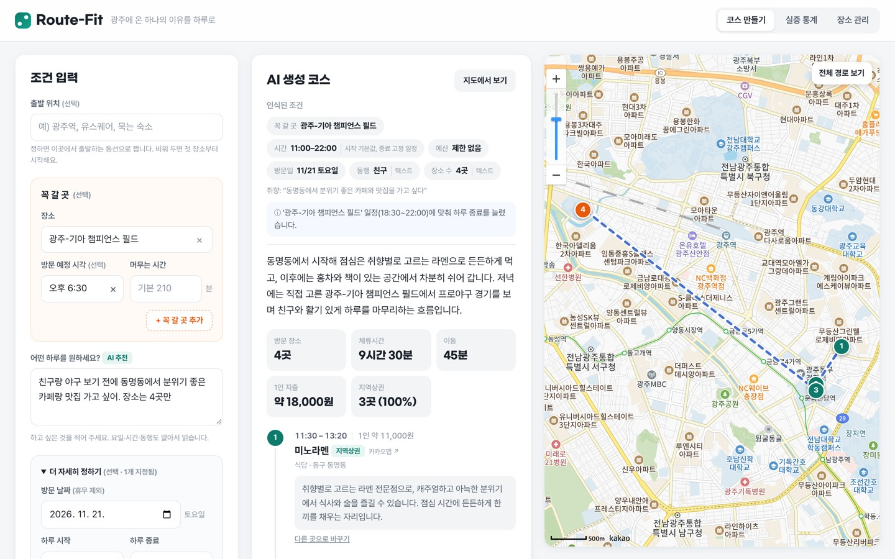

Route-Fit 사용 매뉴얼
접속: https://route-fit.duckdns.org (PC 크롬·엣지 권장, 회원가입 없음)
1. 화면 구성

왼쪽 조건 입력 · 가운데 AI 생성 코스 · 오른쪽 지도
2. 코스 만들기

- 출발 위치(선택): 출발할 곳을 검색해 고릅니다.
- 꼭 갈 곳(선택): 장소를 검색해 고르고 방문 시각을 정합니다. 이 일정은 고정되고, 앞뒤 시간을 AI가 채웁니다.
- 어떤 하루를 원하세요?(필수): 원하는 하루를 문장으로 적습니다.
예) “친구랑 야구 보기 전에 동명동에서 분위기 좋은 카페랑 맛집 가고 싶어. 장소는 4곳만” - 더 자세히 정하기(선택): 방문 날짜, 하루 시작·종료, 1인 예산, 빼고 싶은 장소.
- 코스 만들기 버튼을 누릅니다. 몇 초 뒤 코스와 지도가 나옵니다.